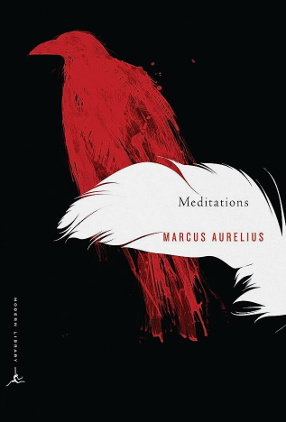

Best Philosophy and Spirituality Books
Living in a world that is getting more and more complicated day by day, having a good understanding of our values and principles, knowing how to live, what is good and what is bad have compounding benefits. In our material world that focuses on progress and success, mental health, spiritual wisdom and inner peace are often given less priority. While the definitions of philosophy and spirituality may vary from person to person, we all must understand their importance in life. Here are the best books that I feel every person should read and digest, to be a wiser, happier and flourishing human being.
Books reviewed in this article:
- Meditations
- Letters from a Stoic
- A Guide to the Good Life
- The Heart of the Buddha's Teachings
- Stillness is the Key
Meditations
by Marcus Aurelius

Marcus Aurelius was the emperor of the Roman empire from 161 AD to 180 AD. He was a proponent of Stoic philosophy and the Meditations are a collection of his thoughts and spiritual relections on what it means to live a good life, how to deal with other people, how to find tranquillity in the midst of chaos and how to be resilient in the face of adversity. He never meant to publish them, but they somehow survived over the centuries and now provide an unedited, unfiltered insight into the emperor's mind.
The book gives us an idea of what all Marcus Aurelius valued in life. You can't help imagining how selfless he was, taking nothing for granted and being so appreciative of others inspite of being the strongest person on the planet in his time (he was the emperor of one-third of the planet). He is a classic example of a man who is virtuous and philosophical as well as responsible towards day-to-day duties. The book might be boring if you read it "like a book", but if you treat it like it is (a personal diary of a great person), and try to get into his mind and internalise his thoughts, it has a lot to offer. It is a book to be lived, rather than read.
What I liked the most in this book:
- The way Marcus appreciates the virtues he sees in other people in his life and shows gratitude (Book 1: Debts and Lessons)
- The themes of Amor Fati (accepting and loving whatever happens) and Memento Mori(contemplating on one's mortality) prominent throughtout the book
- The inner strength (inner fortress) which Marcus teaches us to build. For example he tells himself to be like a rock that stays still even as the waves keep crashing over it, or to be a sphere in perfect stillness
- The insights on how to deal with problematic people: being strict to yourself and tolerant to others, being kind to other people and always thinking about the common good, but at the same time not being swayed by others' opinions.
Letters from a Stoic
by Lucius Annaeus Seneca
Seneca is another Stoic philosopher from ancient Rome. These letters are written by Seneca to his friend Lucilius, and contain some profound insights on life, friendship, adversity and inner peace. Seneca was a very complex personality who was involved in a lot of other pursuits other than philosophy, for example, he was the advisor to emperor Nero.
A Guide to the Good Life
by William Irvine
This book is an introduction to Stoicism, which is one of the Hellenistic philosophies of ancient Rome and Greece. Motivated by the teachings of the Stoics (mainly Epictetus, Musonius Rufus, Seneca and Marcus Aurelius), the author has presented practical guidelines to put this philosophy to use in our twenty-first-century lives. The book is divided into four parts:
- The Rise of Stoicism
- Stoic Psychological Techniques
- Stoic Advice
- Stoicism for Modern Lives
The book firstly entails why it is important to have a philosophy in life. Most humans lack a philosophy by which they measure their life, because of which their decision-making is based primarily on the natural mental make-up and emotions rather than rationality. To avoid ourselves from going the wrong path and finding long-lasting happiness, therefore, what we need is a coherent philosophy which helps us make decisions, design our lifestyle, as well as face the problems of daily life.
We often chase things we never actually wanted in life or end up feeling dissatisfied even after achieving the dreams we once had. The root cause of this according to modern science lies in evolutionary psychology. But what can we do to counter this inherently flawed nature of our brains which can potentially hinder us from living our life well? Are there some subtle changes we can make in our mindset and actions which enable us to find joy and tranquility, without compromising on reason and rationality? That is what this book, and Stoicism in general tries to answer. The book contains a serious philosophical treatment of issues that have pricked humanity since time immemorial, such as anger, grief, insults, etc, and discusses how the Stoics handled them. The author describes the Stoics as “some of the most insightful psychologists of the ancient world” since by their observations they have left us a body of work and literature on what it means for life to be good, and how we can pursue it.
What I liked the most in the book:
- The explanation of why it is important to have a philosophy of life, without which we might “mislive” and waste the one life we have got.
- The realisation of how little human nature has changed over the millennia and the fact that ancient wisdom can be so relevant in today’s world.
- How the author has debunked several myths about Stoicism, particularly the belief that Stoics are “emotionless” or “lifeless”.
- The scientific explanation (based on evolution) of the human condition and how Stoic principles can help mitigate our inherent flaws.
- The author’s personal experience after adopting the philosophy.
- The analytical style of writing and building on a particular thought